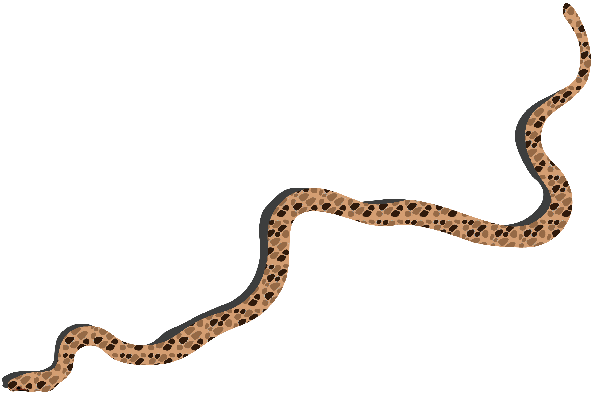

Мідянка звичайна Coronella austriaca
Неотруйна
Червона книга України
Довжина: 60-75 см
Активність: Денна
Ареал: Лісова та лісостепова зони
Харчування: Ящірки, дрібні змії
Опис
Мідянка звичайна — невелика неотруйна змія з тонким, струнким тілом. Забарвлення варіює від сірого до мідно-коричневого з двома рядами темних плям вздовж спини. Молоді особини часто мають більш яскраве забарвлення з контрастним малюнком.


Спосіб життя
- Активна вдень, особливо в ранкові та вечірні години
- Чудово лазить по деревах та кущах
- Неагресивна, при небезпеці намагається втекти
- Народжує живих малят (6-12 особин) наприкінці літа
Середовище існування
- Узлісся та галявини
- Схили з камінням та чагарниками
- Старі парки та сади
- Виноградники та кам'янисті схили
Охорона
Вид занесений до Червоної книги України. Основні загрози:
- Знищення природних місць проживання
- Загибель на дорогах
- Знищення людьми через схожість з гадюкою
Як відрізнити від гадюки:
- Гладка лускатість (у гадюки - кілева)
- Круглі зіниці (у гадюки - вертикальні)
- Відсутність зигзагоподібної смуги на спині
- Більш струнке тіло та менша голова